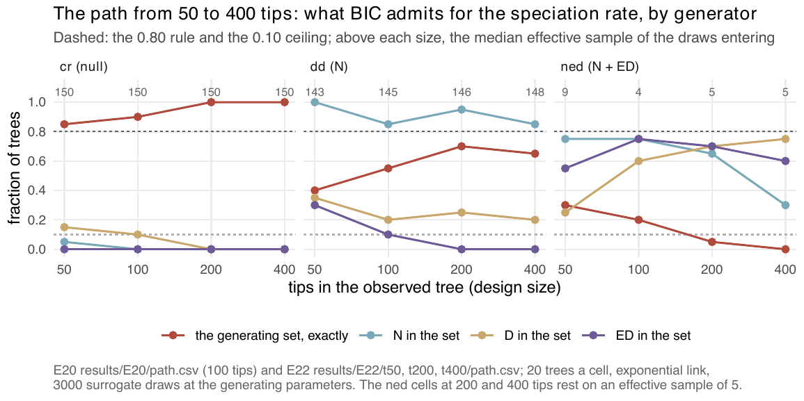
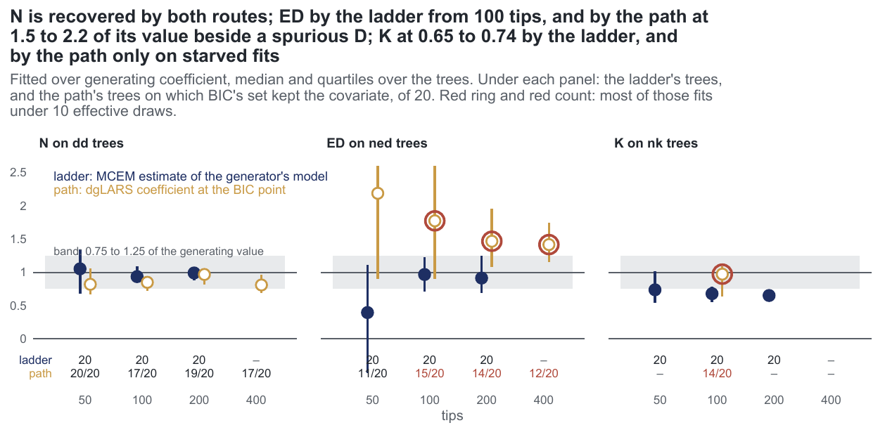

E22 — The covariate path at other sizes (50, 200, 400 tips)
| Status | complete (60 trees a size, no errors) |
| Package build | not recorded |
| Driver / analysis | sim/E20-path.R with --tips 50/200/400 --gens cr,dd,ned; figures fig-s-path-size, fig-study-path, fig-study-routes-coef |
| Data | results/E22/t50/path.csv, t200/path.csv, t400/path.csv (60 rows each), per-size design.rds |
Question
E20 and E21b measured the path at one size, 100 tips, where it found the null and \(N\) but could not separate \(D\) from ED. E22 asks whether that holds or changes as the tree grows, and in particular whether the ned generating set \(N + \mathrm{ED}\) is chosen on \(\ge 80\%\) at any size.
Design
E20's design at 50, 200 and 400 tips, on the cr, dd and ned generators (nd is sampler-limited at every size and was left out).
| parameter | value | meaning |
|---|---|---|
| tips | 50, 200, 400 | observed trees 31-73, 122-295, 245-611 tips (the supplement says 31-70 at 50) |
| crown, turnover, link | 15, 0.10, exponential | \(K\) recalibrated per size |
dd \(\beta_N\) |
-0.0327 / -0.00624 / -0.0017 | at 50 / 200 / 400 tips |
ned \(\beta_{ED}\) |
-0.0797 / -0.104 / -0.138 per unit | \(\log 0.65\) at each size's ED scale |
| trees per cell | 20 | 180 trees |
| draws | 3000 surrogate draws at the generating parameters, 150 of largest weight entering | |
| covariates offered | \(N\), \(D\), ED | for speciation and extinction |
Recorded as in E20, plus the wall-clock of the augmentation and of the path per tree.
Pre-set rule
00-design.md §E22: the E20 rule at each size (BIC set equal to the generating set on \(\ge 80\%\) for cr and dd; an absent covariate on \(\le 10\%\); nothing on the extinction path on more than 10%), and for ned the size at which \(N + \mathrm{ED}\) is chosen on \(\ge 80\%\), if any of the three reaches it. The 400-tip cell is also a cost measurement: a tree whose augmentation or path exceeds two hours is reported as such and the rule is applied to the trees that finished.
Results
With E20's 100-tip cell in the second column:
| generator / quantity | 50 tips | 100 (E20) | 200 | 400 |
|---|---|---|---|---|
cr: exact (∅) |
0.85 (\(D\) 2, \(N{+}D\) 1) | 0.90 | 1.00 | 1.00 |
dd: exact (\(N\) alone) |
0.40 | 0.55 | 0.70 | 0.65 |
dd: \(N\) in set / \(D\) added / ED added |
1.00 / 0.35 / 0.30 | 0.85 / 0.20 / 0.10 | 0.95 / 0.25 / 0.00 | 0.85 / 0.20 / 0.00 (∅ on 0.15) |
dd: \(N\) coefficient at the BIC point (trees kept) |
0.82 (20) | 0.85 (17) | 0.97 (19) | 0.81 (17) |
ned: exact (\(N{+}\)ED) |
0.30 | 0.20 | 0.05 | 0.00 |
ned: \(N\) / \(D\) / ED in set |
0.75 / 0.25 / 0.55 | 0.75 / 0.60 / 0.75 | 0.65 / 0.70 / 0.70 | 0.30 / 0.75 / 0.60 |
ned: median ESS of 3000 (< 10) |
16.3 (7) | 5.4 (16) s-l | 6.7 (12) s-l | 6.0 (13) s-l |
ned: ED coefficient where kept (trees) |
2.19 (11) | 1.78 (15) | 1.47 (14) | 1.42 (12) |
ned: first to enter |
\(N\) 12, \(D\) 5, ED 3 | \(D\) 10, \(N\) 9 | \(D\) 10, \(N\) 10 | \(D\) 19, \(N\) 1 |
| extinction path | \(D\) on 0.05 of ned trees, else nothing |
nothing | nothing | nothing |
| path cost per tree (median s) | 134-199 | 65-82 | 816-1121 | 3084-4668 (max 3.1 h) |
s-l = sampler-limited (median ESS < 10). The ESS printed in fig-s-path-size is that of the 150 draws entering the path (9, 4, 5, 5 for ned); the table gives the ESS of all 3000 (ess column). At 400 tips the generating \(\beta_N = -0.0014\) per lineage on dd trees, and the null is chosen on 0.15 of them. At 400 tips 5 of 60 paths took more than two hours (sec_path, maximum 3.1 h); every row of the file has a result, so the rule is applied here to all 60 trees, and the record does not say that those five were set aside.

cr trees the null rises to 1.00; on dd trees \(N\) stays at 0.85-1.00 while \(N\) alone reaches 0.70 at most; on ned trees \(N\) falls and \(D\) rises, and the exact set falls to 0.00.
dd trees is within the band by the path at every size (0.81-0.97); ED on ned trees comes back from the path at 1.42-2.19 of its value, red-ringed where more than half the fits have ESS below 10.Conclusion
cr: rule met at every size (0.85, 0.90, 1.00, 1.00).dd: rule not met at any size: \(N\) alone on 0.40-0.70, although \(N\) is in the set on 0.85-1.00 and enters first on 0.95-1.00 at 50, 200 and 400 tips (0.85 at 100); \(D\) is falsely added on 0.20-0.35, above the 0.10 ceiling. Specificity rises from 50 tips (0.40) to 200-400 (0.65-0.70).ned: \(N + \mathrm{ED}\) is not chosen on \(\ge 80\%\) at any size (0.30 at 50, 0.00 at 400), and every cell above 50 tips is sampler-limited — the surrogate proposal's map from E7 at -0.35\(\lambda\), read at the path. As the tree grows, \(N\) leaves the set (0.75 → 0.30) and \(D\) enters (0.25 → 0.75), first to enter on 19 of 20 trees at 400 tips: the path's preference moves from ED toward \(D\), the two still sharing the pendant edge.
The null and the entry of \(N\) hold from 50 to 400 tips; the separation of \(D\) and ED does not appear at any size. The ned cells are sampler-limited, so they do not show what the path would do on adequately sampled draws. The cost grows from about a minute to about an hour per path between 100 and 400 tips.
Related
- E20 — the 100-tip design E22 extends.
- E21 — E21b, \(K\) offered to the path at 100 tips.
- E33 — the path at a fitted estimate rather than the generating parameters.
- E27 — the ladder at 50 and 200 tips, the other route in
fig-study-routes. - E7 — the surrogate proposal's feasibility map that predicts the
nedESS.